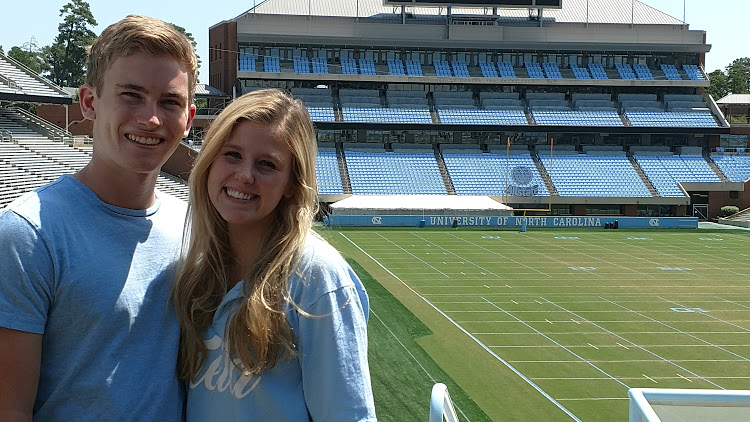

Friends!

First I will talk about my boyfriend, Griffin! He is in the photo above. He is my best friend in the world and I love him very much. He attends the University of North Carolina Chapel Hill. He is very smart with plans of being a patent lawyer. He is majoring in Finance with minors in chemestry and entreprenuership and is planning on attending law school or possibily doing consulting. We met at the Masquerade in Atlanta our senior year of highschool. He attended Lovett, a rival highschool. We began dating then and have been dating close to two years now. We have been doing long distance and I do get to see him pretty often which is very nice. The longest I go without seeing him is three weeks, which I am very thankful for. He is really great guy and I am lucky to have him.
I have already talked about some of my highschool friends such as Johnna, Kendall and Kasey. We are still pretty close even though we all go to very different schools. Johnna goes to Emory, Kendall goes to University of Michigan and Kasey attends Wake Forrest. Hailey is another friend of mine that was pre-college that I am still very close with. We have been best friends my entire life. She wants to be a fashion designer and goes to FIT in New York. She has gone to art school her whole life and is extremely talented. She is a part of an extremely elite program that Calvin Klien and a bunch of other big names all were taught through. I fully believe she is going to make it big one day.
Here are some of my college friends! It is hard to find a photo of everyone. These are some of my theta friends that I currently live with. They are some of the sweetest people I have ever met and I am lucky to have them. Being friends with them is really awesome because for the first time I am in a large group of girls that there is absolutley no drama ever. Everyone really cares about each other and isn't looking to hurt another to get ahead. They are not my only college friends like I said, but they are some of my close ones.
Places I met my Friends
| Before College | College |
|---|---|
|
|
Click here to return to the homepage Home Click here to read about my family Family Click here to read some fun facts about me Facts